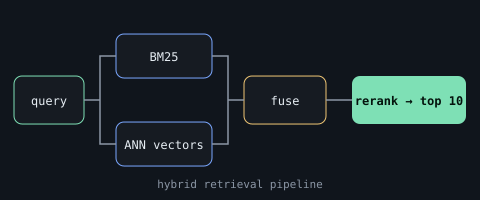
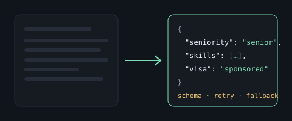
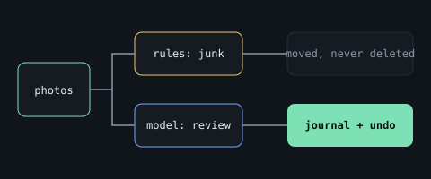
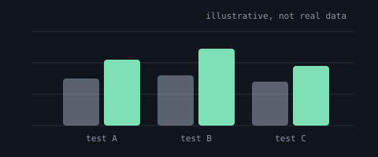

Built · live demo
Hybrid Search & Retrieval Evaluation
Hybrid BM25 + ANN + transformer reranking over 8,807 Netflix records behind a cached FastAPI service, with latency benchmarks and a tool-calling agent with grounding checks.
Shows: retrieval, serving, evaluation, tests, CI and Docker.
PythonFastAPIBM25Docker

In progress
LLM-Based Job Posting Extraction
Turning messy job posts into validated structured data, with retries, fallback models, and accuracy, cost and latency benchmarks.
Shows: reliable LLM pipelines, schema validation, cost awareness.
PythonLLMsJSON schema

Evaluated
Sloth Archivist
An offline CLI that triages photo folders with rules first, a local vision model second, and logs every decision. Nothing is deleted.
Shows: pipeline design, safe automation, schema-validated model output.
PythonOllamaGemmapytest

In progress
Hotel cancellation risk
SQL-first analysis and chronologically validated models, explicit about prediction versus intervention.
Shows: SQL, data quality, leakage control, calibration.
PostgreSQLscikit-learnpandas